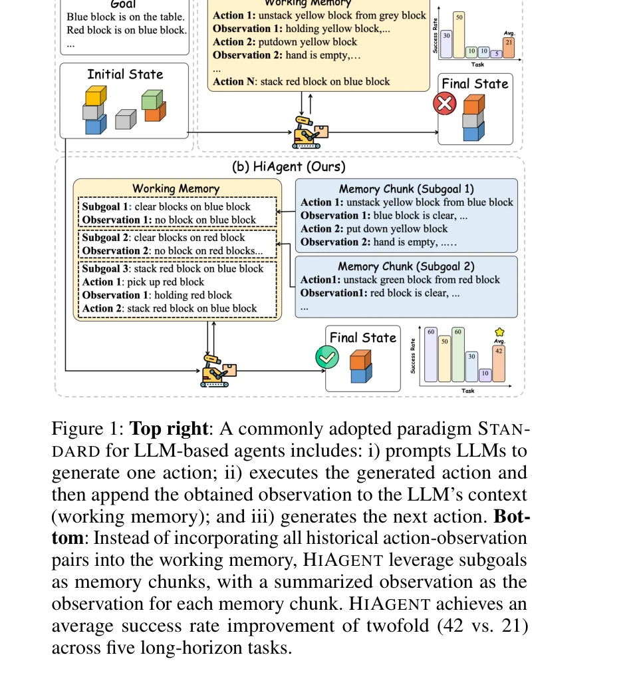

Essence

Figure 2: An overview of the process of HIAGENT.
HIAGENT는 LLM 기반 에이전트의 작업 메모리를 subgoal을 중심으로 계층적으로 관리하여 장기 작업에서 맥락 중복성을 줄이고 성능을 향상시키는 프레임워크이다.
저자: Mengkang Hu, Tianxing Chen, Qiguang Chen, Yi Mu, Wenqi Shao, Ping Luo | 날짜: 2024 | URL: https://arxiv.org/abs/2408.09559
Figure 2: An overview of the process of HIAGENT.
HIAGENT는 LLM 기반 에이전트의 작업 메모리를 subgoal을 중심으로 계층적으로 관리하여 장기 작업에서 맥락 중복성을 줄이고 성능을 향상시키는 프레임워크이다.

Figure 1: Top right: A commonly adopted paradigm STAN-
Figure 2: An overview of the process of HIAGENT.
총평: HIAGENT는 인지 과학 원리를 기반으로 LLM 에이전트의 작업 메모리 문제를 창의적으로 해결하며, 실험 결과가 뛰어나고 실용적 가치가 높다. 다만 subgoal 생성 메커니즘의 강건성과 다양한 환경에서의 일반화 가능성에 대한 추가 검증이 필요하다.